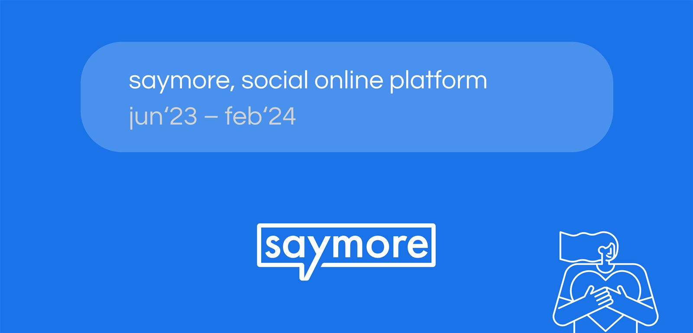
SayMore — платформа поддержки ментального здоровьяSayMore — mental-health support platform
Web-платформа, full-cycle design (от исследований до прода) · Июнь 2023 — Февраль 2024Web platform, full-cycle design (research to prod) · June 2023 — February 2024
1. Описание проекта1. Project overview
КонтекстContext
SayMore — социальная платформа, где люди могут анонимно делиться переживаниями и получать поддержку от сообщества, а специалисты в области ментального здоровья — строить личный бренд и монетизировать экспертизу.
Клиент пришёл с идеей создать «безопасный Reddit» для психологически чувствительной аудитории: без агрессии, осуждения и нежелательного контента, но с возможностью найти людей с похожим опытом.
SayMore is a social platform where people anonymously share struggles and get community support, while mental-health professionals build personal brands and monetize expertise.
The client came with an idea for a “safe Reddit” for a psychologically sensitive audience: no aggression, judgment or unwanted content — but with a way to find people with similar experiences.
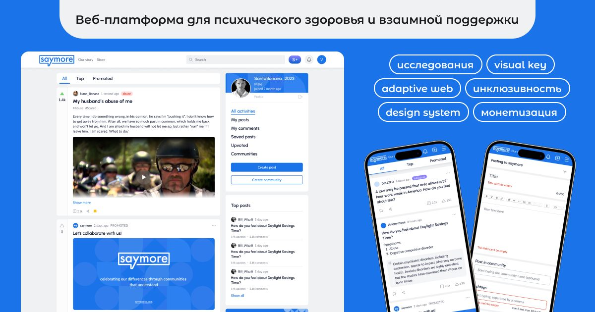
Целевая аудиторияAudience
Я провела самостоятельное исследование и выделила 5 персон — 3 основных пользователя и 2 монетизационных.
Основные пользователи:
| Персона | Кто | Главная потребность |
|---|---|---|
| «Ищущий поддержку» | 22–35 лет, переживает тревогу или жизненный кризис, не готов к терапии финансово или психологически | Найти людей с похожим опытом без страха осуждения |
| «Активный слушатель» | Эмпатичный пользователь, получает удовлетворение от помощи другим | Помогать и строить репутацию в сообществе |
| «Участник тематического сообщества» | Человек с конкретной проблемой (ОКР, развод, потеря) | Найти закрытое сообщество «таких же» |
Монетизационные персоны:
| Персона | Кто | Потребность |
|---|---|---|
| Специалист | Психолог / коуч | Расширить аудиторию, монетизировать экспертизу |
| НКО / клиника | Организация в сфере ментального здоровья | Канал для продвижения услуг и построения сообщества |
I ran my own research and defined 5 personas — 3 core users and 2 monetization ones.
Core users:
| Persona | Who | Core need |
|---|---|---|
| Support seeker | 22–35, anxiety or life crisis, not ready for therapy financially or emotionally | Find people with similar experiences, no fear of judgment |
| Active listener | Empathetic user fulfilled by helping others | Help and build community reputation |
| Community member | Specific issue (OCD, divorce, loss) | Find a closed community of “people like me” |
Monetization personas:
| Persona | Who | Need |
|---|---|---|
| Specialist | Psychologist / coach | Grow audience, monetize expertise |
| NGO / clinic | Mental-health organization | Channel for services and community building |
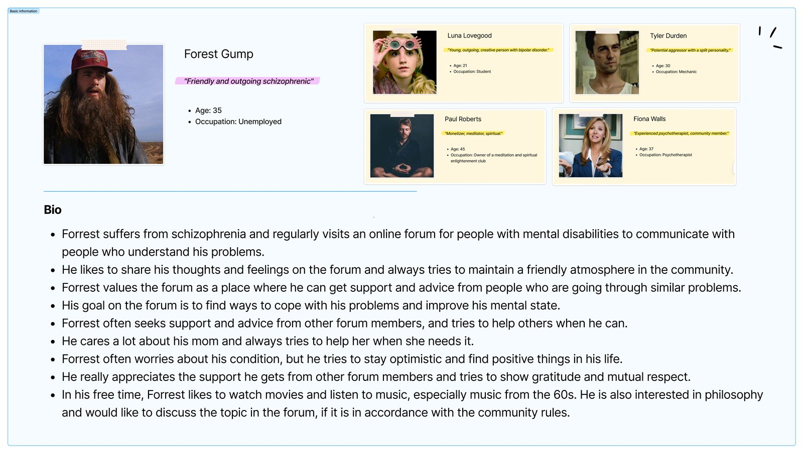
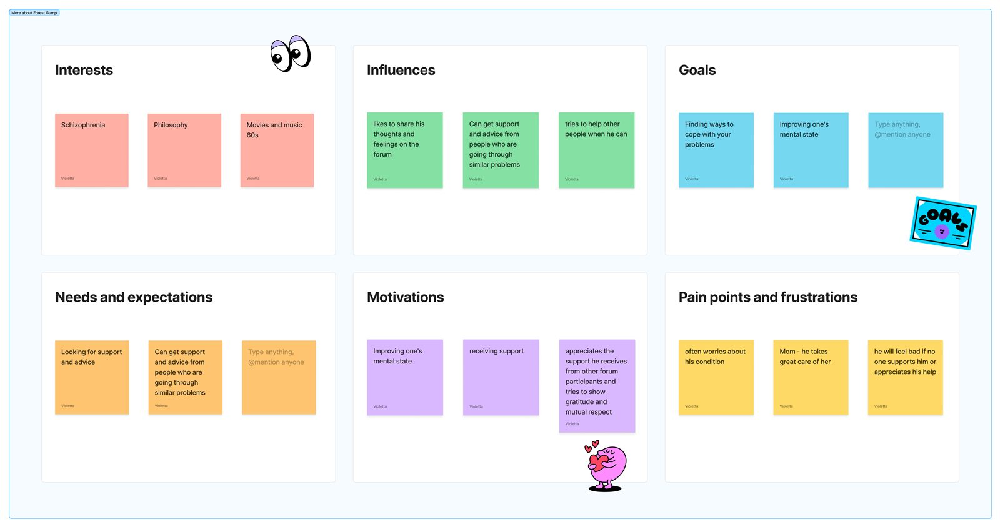
КонкурентыCompetitors
Перед стартом я провела бенчмаркинг ключевых продуктов на рынке peer-support и ментального здоровья.
| Продукт | Суть | Сильные стороны | Слабые стороны |
|---|---|---|---|
| 7 Cups | Поддержка через волонтёров, 1-на-1 чат | 160k+ слушателей, 24/7, 140 языков | Нет сообществ, краши, дорогая терапия |
| TalkLife | Анонимная peer-support сеть для молодёжи | Анонимность, мобильный фокус | Нет модерации, только молодёжная ЦА |
| Wisdo | Менторская сеть по опыту | Персонализированный ментор | Слабые community-фичи, нет фида |
| Reddit (r/mentalhealth) | Открытые субреддиты | Аудитория, анонимность | Дизлайки, токсичность, нет защиты контента |
| Пикабу | RU-соцсеть с сообществами и лентой | Аудитория, разделы «Здоровье»/«Отношения», псевдоанонимность | Дизлайки и карма — барьер; нет модерации чувствительных тем и защиты от триггеров |
Пробел, который закрывает SayMore: ни один конкурент не сочетает безопасную соцсеть (без дизлайков + триггерные слова) + тематические сообщества + выход на специалистов в одной экосистеме.
Before kickoff I benchmarked key peer-support and mental-health products.
| Product | What | Strengths | Weaknesses |
|---|---|---|---|
| 7 Cups | Volunteer support, 1-on-1 chat | 160k+ listeners, 24/7, 140 languages | No communities, crashes, pricey therapy |
| TalkLife | Anonymous peer network for youth | Anonymity, mobile-first | No moderation, youth-only |
| Wisdo | Mentorship by experience | Personal mentor | Weak community, no public feed |
| Reddit (r/mentalhealth) | Open subreddits | Audience, anonymity | Downvotes, toxicity, no content protection |
| Pikabu | RU network with communities and feed | Audience, Health/Relationships topics, pseudo-anonymity | Downvotes and karma block vulnerable content; no sensitive-topic moderation or trigger protection |
The gap SayMore fills: no competitor combines a safe social network (no downvotes + trigger words) with themed communities and access to specialists in one ecosystem.
2. Постановка задачи2. Problem statement
ЦелиGoals
- Создать безопасное пространство для обсуждения ментального здоровья — без осуждения, с контентной защитой
- Обеспечить монетизацию через Pro-подписку и персональные каналы после MVP
- Привлечь первых специалистов как поставщиков контента и услуг
- Build a safe space for mental-health discussion — no judgment, with content protection
- Enable monetization via Pro subscription and personal channels post-MVP
- Attract first specialists as content and service providers
Боли пользователейUser pains
- «Меня осудят» — страх негативной реакции блокирует публикацию уязвимого контента
- «Я один с этим» — нет места, где можно найти людей с точно такой же проблемой
- «Не хочу это видеть» — нет инструментов фильтрации тяжёлых тем
- «Не могу позволить себе терапию» — нужна доступная альтернатива
- «Не знаю, где найти нормального специалиста» — нет пространства с репутацией
- “I'll be judged” — fear of reactions blocks vulnerable posts
- “I'm alone in this” — no place to find people with the exact same issue
- “I don't want to see this” — no tools to filter heavy topics
- “I can't afford therapy” — an accessible alternative is needed
- “Where do I find a decent specialist?” — no trusted space with reputation
ГипотезыHypotheses
| # | Гипотеза | Статус |
|---|---|---|
| H1 | Отсутствие дизлайков снизит тревогу при публикации | Подтверждена на кортестировании |
| H2 | Триггерные слова защитят ленту чувствительных пользователей | Принята, реализована |
| H3 | Анонимный режим повысит готовность делиться | Принята, большинство постов — анонимно |
| H4 | Upsell при создании сообщества повысит конверсию в Pro | Реализована в проде |
| # | Hypothesis | Status |
|---|---|---|
| H1 | No downvotes will lower posting anxiety | Confirmed in hallway testing |
| H2 | Trigger words will keep sensitive users' feeds safe | Accepted, implemented |
| H3 | Anonymous mode will boost sharing | Accepted, most posts are anonymous |
| H4 | Upsell at community creation will lift Pro conversion | Live in production |
Метрики успехаSuccess metrics
Команда намеренно завершила весь функционал до старта маркетинга. Результаты на момент запуска:
| Критерий | Результат |
|---|---|
| Запуск MVP в срок | Выполнено |
| Полный скоп реализован | Выполнено |
| Монетизация с первого дня | Выполнено |
| Кортесты без критических UX-проблем | Выполнено |
| Адаптив mobile + tablet | Выполнено (360×640, 768×1024) |
The team deliberately finished all functionality before marketing. Results at launch:
| Criterion | Result |
|---|---|
| MVP on time | Done |
| Full scope shipped | Done |
| Monetization from day one | Done |
| Hallway tests with no critical UX issues | Done |
| Mobile + tablet adaptive | Done (360×640, 768×1024) |
3. Команда и обязанности3. Team
| Роль | Обязанности |
|---|---|
| Product Designer (я) | Исследования, бенчмаркинг, IA, flows, ДС, UI, адаптив, передача, ревью |
| Project Manager | Координация, дедлайны, клиент |
| Backend (×2) | Логика, API, БД |
| Frontend (×1) | Интерфейс по макетам |
| DevOps (×1) | Инфра, деплой |
| QA (×2) | Дизайн-тесты, функциональные тесты |
Работали в формате, близком к Scrum: спринты по фичам, еженедельные синки, дизайн в каждом спринте.
| Role | Responsibilities |
|---|---|
| Product Designer (me) | Research, benchmarking, IA, flows, DS, UI, adaptive, handoff, review |
| Project Manager | Coordination, deadlines, client |
| Backend (×2) | Logic, API, database |
| Frontend (×1) | UI from mockups |
| DevOps (×1) | Infra, deploy |
| QA (×2) | Design and functional testing |
Near-Scrum setup: feature sprints, weekly syncs, design inside every sprint.
4. Описание фичей4. Features
4.1 Лента постов4.1 Post feed
Лента видна сразу при входе — публичный контент без регистрации. После авторизации — персональный фид по хэштегам, голосование (только ↑), сохранения, комментарии.
Ключевое решение: только апвоут. Голос вверх — знак поддержки, а не оценки. Стрелка вниз убрана сознательно.
Сценарий: Ребекка, 28 лет. Открывает SayMore в тревожный день, находит похожую историю, жмёт ↑, оставляет комментарий поддержки, сохраняет пост.
The feed is visible on entry — public content without signup. After login: personalized hashtag feed, voting (↑ only), saves, comments.
Key decision: upvote only. Up means support, not rating. Downvote removed deliberately.
Scenario: Rebecca, 28. Opens SayMore on an anxious day, finds a similar story, upvotes, leaves a supportive comment, saves the post.
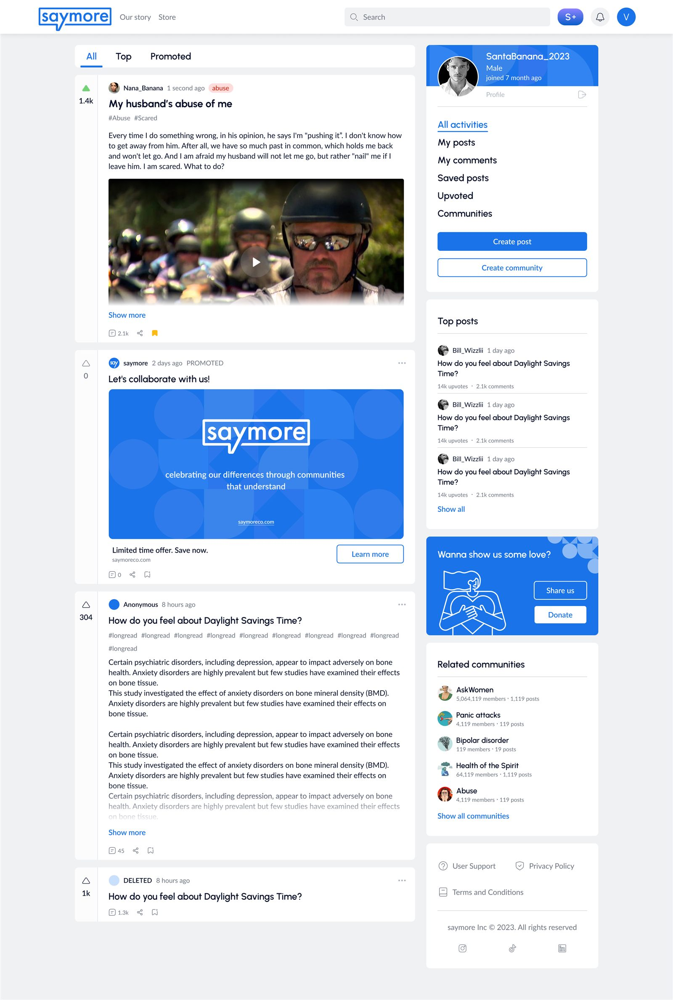
4.2 Создание поста4.2 Post creation
Форма с опциями безопасности:
- Хэштеги — навигация и персонализация
- Триггерные слова — красным в превью; лента с фильтром пост не покажет
- Геотег (до 3) — местные сообщества и ивенты
- Анонимный режим — гости пост не видят
- Напоминание о гуманности в сайдбаре
Сценарий: Хелен пишет об абьюзе, отмечает триггер. Пост с красной меткой, фильтрованные ленты его скрывают. Публикует анонимно, получает поддержку в течение часа.
A form with safety options:
- Hashtags — navigation and personalization
- Trigger words — red in preview; filtered feeds hide the post
- Geotags (up to 3) — local communities and events
- Anonymous mode — guests can't see the post
- Humanity reminder in the sidebar
Scenario: Helen writes about abuse, tags the trigger. The post shows a red label, filtered feeds hide it. She posts anonymously and gets support within an hour.

4.3 Сообщества4.3 Communities
Тематические группы для людей с похожим опытом. Любой авторизованный пользователь может вступить или создать сообщество.
Сценарий: Майкл ищет людей с ОКР. Находит «OCD Support», вступает, читает истории, задаёт вопрос — ответы за несколько часов.
Themed groups for people with shared experiences. Any signed-in user can join or create a community.
Scenario: Michael looks for people with OCD. Finds “OCD Support”, joins, reads stories, asks a question — answers within hours.
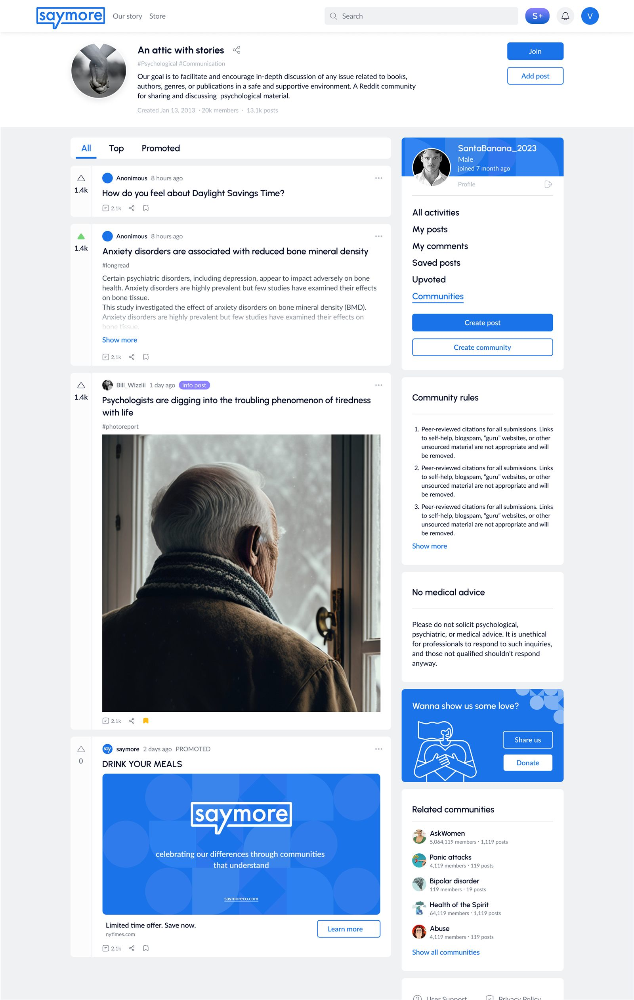
4.4 Персональный канал (монетизация)4.4 Personal channel (monetization)
Платная фича Pro: личный блог одного автора. Только автор публикует, читатели комментируют и донатят. Для психологов, НКО, инфлюенсеров.
Точки входа: кнопка «S» в хедере и upsell при создании сообщества — в момент, когда пользователь уже мотивирован.
Решение: кнопка донации с иконкой «рука с сердцем» вместо холодного «Donate» — пожертвование как поддержка с любовью, а не транзакция.
Paid Pro feature: a single-author personal blog. Only the author posts; readers comment and donate. For psychologists, NGOs, influencers.
Entry points: the “S” button in the header and upsell at community creation — when the user is already motivated.
Decision: a donate button with a “hand with heart” icon instead of a cold “Donate” — giving as loving support, not a transaction.

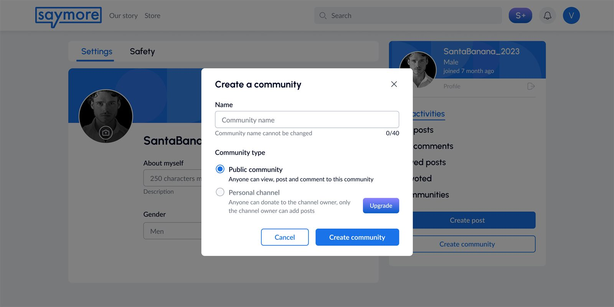
5. Ограничения5. Constraints
Временные:
| Этап | Период |
|---|---|
| Исследование + IA + визуальный ключ + MVP | Июнь 2023 (3–4 недели) |
| Монетизация + каналы + маркетплейс + админки + адаптив + ДС + доработки | Август 2023 — Февраль 2024 |
Технические:
- Веб с адаптивом под 1440px, 768×1024, 360×640
- Единственный дизайнер — согласования напрямую с PM и клиентом
- Дедлайн MVP 3 недели — без итераций через lo-fi
Time:
| Phase | Period |
|---|---|
| Research + IA + visual key + MVP | June 2023 (3–4 weeks) |
| Monetization + channels + marketplace + admin + adaptive + DS + refinements | August 2023 — February 2024 |
Technical:
- Web with 1440px, 768×1024, 360×640 adaptive
- Sole designer — direct alignment with PM and client
- MVP deadline 3 weeks — no lo-fi iterations
6. Процесс решения проблемы6. Problem-solving process
6.1 Дизайн-методология6.1 Methodology
Работала по Design Thinking в адаптации под agile: Empathize → Define → Ideate → Prototype → Test. Empathize — персоны и бенчмаркинг; Define — HMW и IA; Ideate — мудборд и дизайн-язык; Prototype — сразу hi-fi; Test — кортесты с командой и клиентом.
Design Thinking adapted to agile: Empathize → Define → Ideate → Prototype → Test. Empathize — personas and benchmarking; Define — HMWs and IA; Ideate — moodboard and design language; Prototype — hi-fi right away; Test — hallway tests with team and client.
6.2 Исследование6.2 Research
Бюджета на интервью не было — провела самостоятельное исследование: сценарии конкурентов, отзывы пользователей, паттерны сообществ (Reddit, TalkLife, 7 Cups). Разработала 5 персон. Сравнила 5 продуктов по функциям, UX, монетизации и безопасности.
Инсайты: главный барьер — страх осуждения; пользователям нужен инструмент выбора, а не укрытие; специалисты готовы платить за «прогретую» аудиторию; анонимность критична для чувствительных тем.
No budget for interviews — ran desk research instead: competitor scenarios, user reviews, community patterns (Reddit, TalkLife, 7 Cups). Built 5 personas. Compared 5 products on features, UX, monetization and safety.
Insights: the top barrier is fear of judgment; users want a choice tool, not a hiding place; specialists will pay for a “warmed-up” audience; anonymity is critical for sensitive topics.

6.3 Информационная архитектура6.3 Information architecture
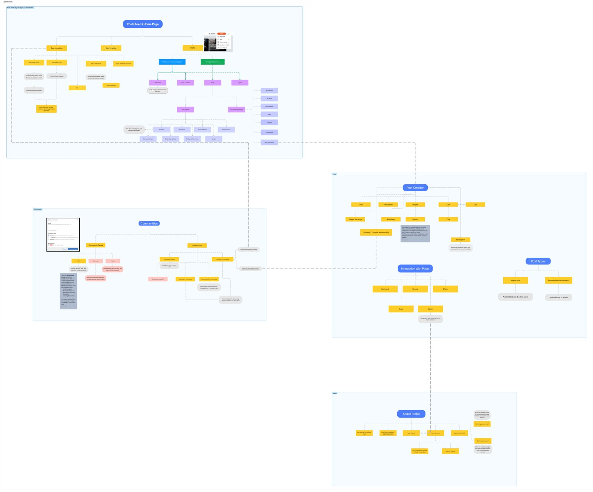
6.4 Прототипирование6.4 Prototyping
Из-за дедлайна отказались от lo-fi: прототипы сразу hi-fi, близкие к финалу — разработчики верстали без лишних согласований. Каждый компонент — со всеми состояниями (default / hover / active / disabled / error / empty).
Дизайн-система:
The deadline killed lo-fi: prototypes went straight to hi-fi, close to final — developers built with no extra rounds. Every component covered all states (default / hover / active / disabled / error / empty).
Design system:
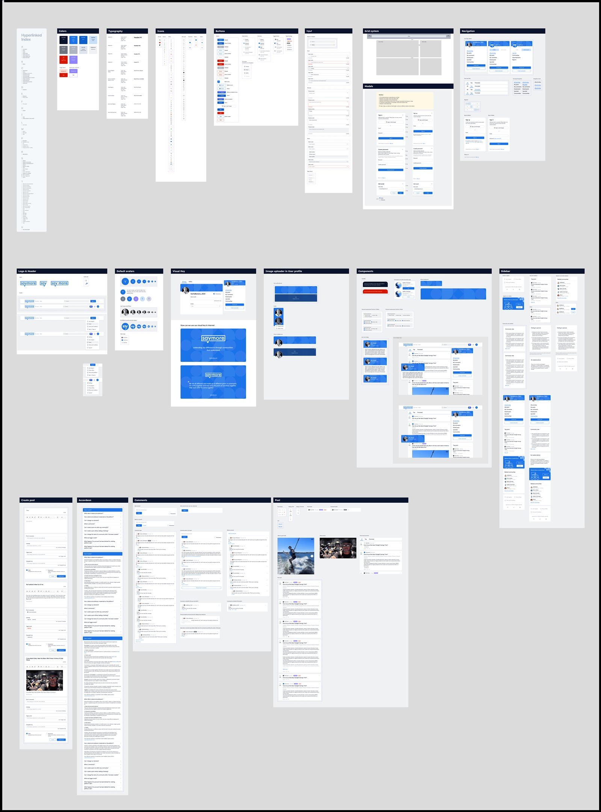
Адаптив: три брейкпоинта — 1440px, 768×1024, 360×640, компоненты адаптируются под каждый.
Adaptive: three breakpoints — 1440px, 768×1024, 360×640, components adapt to each.
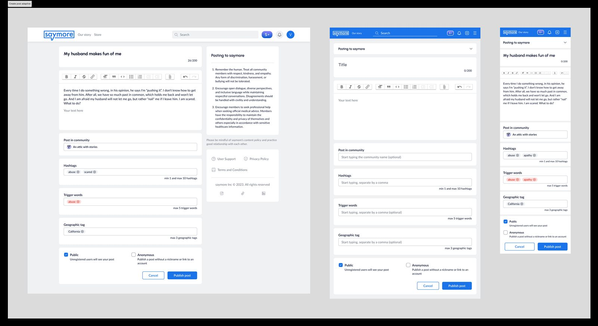
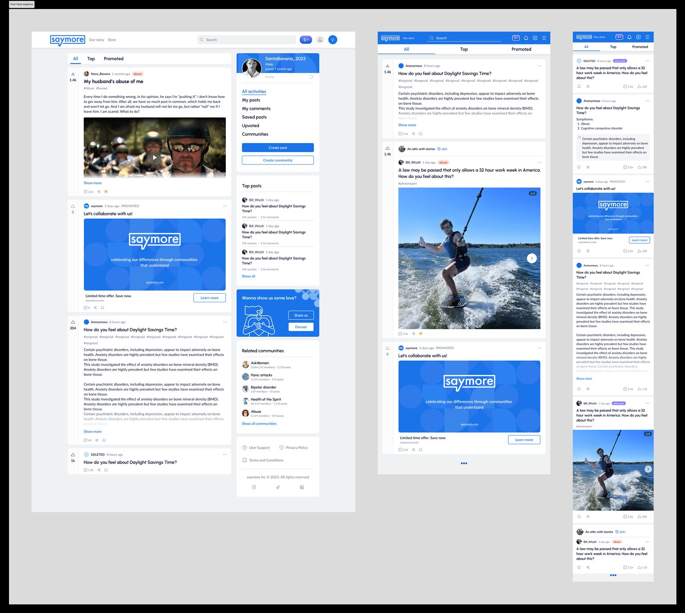
6.5 Тестирование6.5 Testing
QA проводила дизайн-тесты + кортесты внутри команды: тестировщики проходили ключевые сценарии и фиксировали UX-проблемы до продакшна. Тест-сценарии создания поста:
| # | Задача | Что проверяется |
|---|---|---|
| T1 | Найди создание поста | Обнаруживаемость кнопки |
| T2 | Добавь триггер «абьюз» | Понятность триггера vs хэштега |
| T3 | Что будет с постом после триггера? | Ментальная модель |
| T4 | Опубликуй анонимно | Переключатель анонимности |
| T5 | Опубликуй в сообщество | Выбор сообщества из формы |
| T6 | Добавь геотег | Назначение гео |
| T7 | Добавь хэштеги | Множественные значения |
| T8 | Проверь приватность поста | Настройки приватности |
| T9 | Прочитай правила в сайдбаре | Заметность правил |
| T10 | Оцени сложность 1–5 | Общая сложность |
По итогам — точечные правки: UX-копи, акценты, упрощение шагов.
QA ran design tests + hallway tests in-team: testers walked key scenarios and logged UX issues pre-production. Post-creation test tasks:
| # | Task | Checked |
|---|---|---|
| T1 | Find post creation | Button discoverability |
| T2 | Add the “abuse” trigger | Trigger vs hashtag clarity |
| T3 | What happens after adding a trigger? | Mental model |
| T4 | Publish anonymously | Anonymity toggle |
| T5 | Publish into a community | In-form community pick |
| T6 | Add a geotag | Geo purpose |
| T7 | Add hashtags | Multiple values |
| T8 | Verify post privacy | Privacy settings |
| T9 | Read sidebar rules | Rules visibility |
| T10 | Rate difficulty 1–5 | Overall complexity |
Result — targeted fixes: UX copy, accents, simpler steps.
7. Визуализация результатов7. Visual output
Визуальный языкVisual language
Минимализм: мягкий голубой акцент, линейные иконки с закруглениями, мягкие карточки. Не раздражать чувствительных пользователей — и быть современным.
Minimalism: soft blue accent, rounded line icons, soft cards. Calm for sensitive users — yet modern and trustworthy.
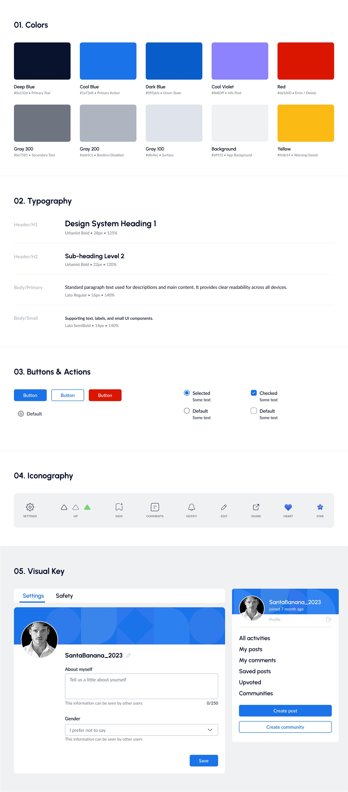
Ключевые экраныKey screens

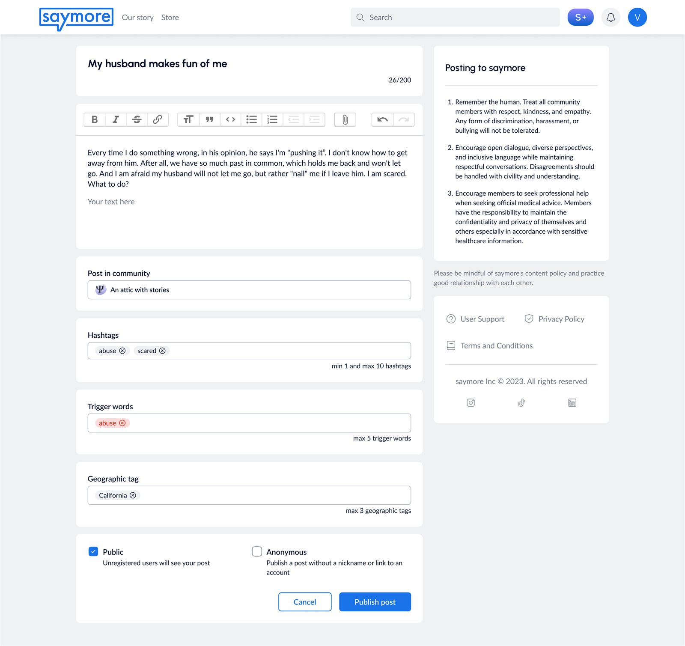
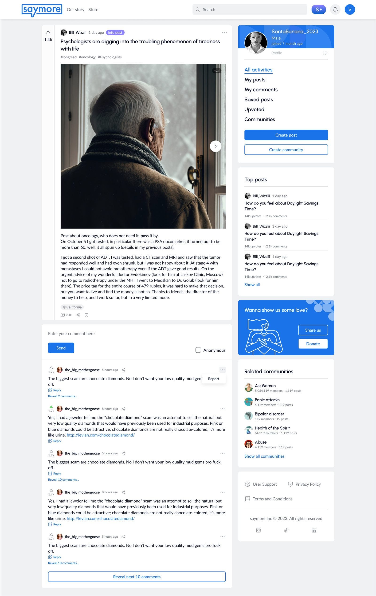

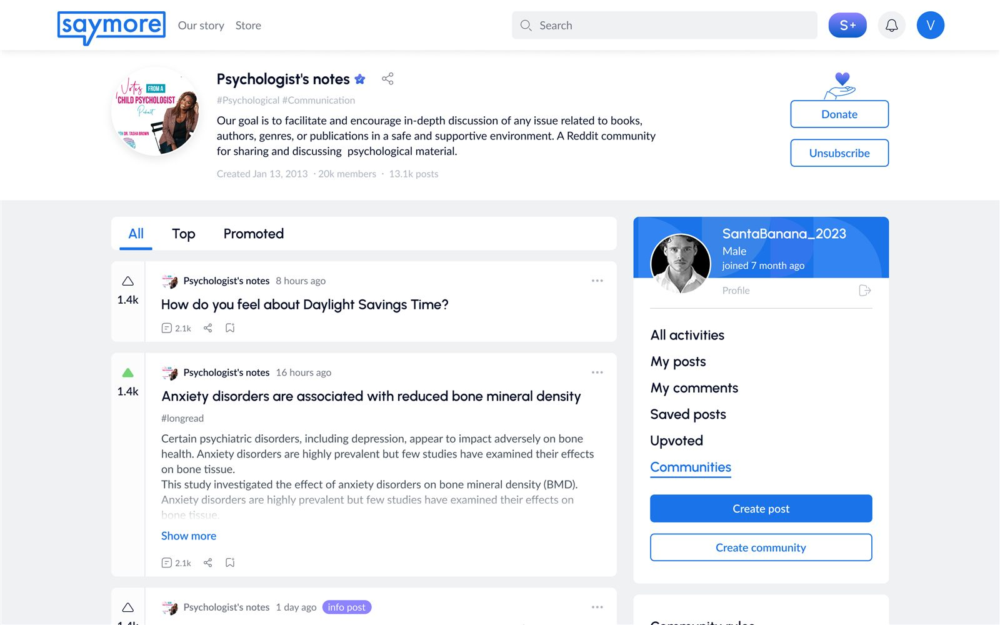
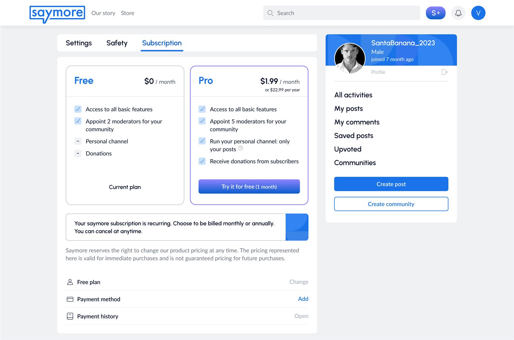
8. Участие в процессе разработки8. Working with developers
Подход к взаимодействию с разработкойDev collaboration approach
Сначала — обсуждение технических особенностей фичи с командой, потом — проектирование. Ограничения стека учитывались заранее, макеты не переделывались постфактум. Помог frontend-бэкграунд: реализуемость проверяла через доки, CodePen или код. Например, помогла написать JS для анимации переходов на промо-сайте — быстрее и точнее.
First — technical discussion with the team, then — design. Stack constraints were factored in upfront, no post-factum rework. My frontend background helped: I validated feasibility via docs, CodePen or code. E.g. I helped write JS for promo-site transitions — faster and pixel-accurate.
Front-ревьюFront review
Сверяла прод с макетами Figma, фиксировала отклонения в комментариях, согласовывала правки.
Compared production against Figma, logged deviations as comments, aligned fixes.
Взаимодействие с командойTeamwork
- Еженедельные синки, презентация решений
- Edge cases прямо на макетах (состояния, пустые экраны, ошибки)
- Комменты Figma — основной асинхронный канал
- Weekly syncs, decision demos
- Edge cases right on mockups (states, empties, errors)
- Figma comments as the main async channel
9. Результаты для пользователя и бизнеса9. User & business results
Запущено: saymoreco.com
- Платформа с нуля за 8 месяцев: исследование → прод
- Масштабируемая дизайн-система на весь скоп
- Адаптив 1440 / 768×1024 / 360×640
- Монетизация с первого дня: Pro + донации через каналы (+ донации проекту)
- Многоуровневая безопасность контента — УТП продукта
Для бизнеса: готовый дифференцированный продукт с монетизацией; специалисты получили инструмент личного бренда на «прогретой» аудитории.
Launched: saymoreco.com
- Platform from scratch in 8 months: research → prod
- Scalable design system covering full scope
- Adaptive 1440 / 768×1024 / 360×640
- Day-one monetization: Pro + channel donations (+ project donations)
- Multi-level content safety as the USP
For business: a finished, differentiated, monetized product; specialists got a personal-brand tool on a “warmed-up” audience.
10. Фидбэк и аналитика10. Feedback & analytics
ВыводыTakeaways
SayMore — один из самых объёмных и этически ответственных проектов в моей практике. Full-cycle на чувствительной ЦА, где каждое решение — про психологическую безопасность, а не только про UX.
SayMore is one of the largest and most ethically demanding projects I've done. Full-cycle on a sensitive audience, where every decision is about psychological safety — not just UX.
ЧелленджиChallenges
- Безопасность vs открытость — открытость для роста + защита от травм. Решение: триггеры + анонимность + только апвоут + репорты.
- Монетизация без потери trust — платные фичи как часть экосистемы: каналы, эмпатичный донат, ненавязчивый upsell.
- Hi-fi за 3 недели — начала с самых рискованных компонентов (пост со всеми элементами), согласовала первыми — сняла неопределённость до блокера разработки.
- Safety vs openness — open for growth yet trauma-safe. Solution: triggers + anonymity + upvote-only + reports.
- Monetization without losing trust — paid features as ecosystem parts: channels, empathetic donations, gentle upsell.
- Hi-fi in 3 weeks — started with the riskiest components (the everything-post), aligned them first — removed uncertainty before it blocked development.
Доказательства эффективностиProof of impact
- Прод: saymoreco.com
- Figma с ДС и макетами: ссылка
«JetRockets helped me start from a loose idea to a tangible product with very specific functionality that also differentiated the platform from existing competitors. From the design to data, they have been essential to every part of this process.»
Stephanie Kaiser — Founder & CEO, SayMore
- Live product: saymoreco.com
- Figma with DS and mockups: link
“JetRockets helped me start from a loose idea to a tangible product with very specific functionality that also differentiated the platform from existing competitors. From the design to data, they have been essential to every part of this process.”
Stephanie Kaiser — Founder & CEO, SayMore